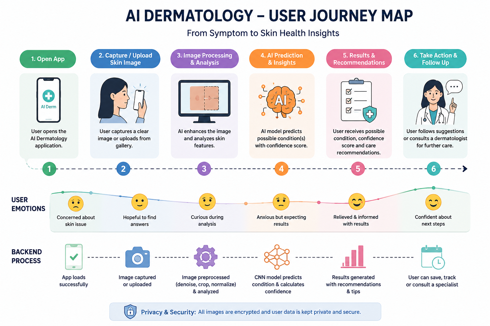

Deep learning powered dermatology assistant for early skin disease detection
DermaVision is an AI-powered dermatology mobile application developed to assist users in identifying common skin diseases using image classification technology. The application allows users to capture or upload images of affected skin areas and receive AI-generated predictions regarding potential skin conditions.
The project was developed to improve accessibility to preliminary dermatological screening, especially for individuals living in remote areas with limited access to dermatologists or healthcare facilities. Many users ignore early skin symptoms due to lack of awareness, delayed medical consultation, or limited healthcare accessibility.
DermaVision combines computer vision, image preprocessing, and deep learning techniques to analyze skin lesion images and classify possible skin diseases. The system provides prediction results along with basic disease information and precautionary guidance to encourage users to seek medical attention when necessary.
The application was designed with a simple and user-friendly interface to ensure accessibility for users with limited technical knowledge. Fast image prediction and minimal interaction complexity were prioritized to create a smooth mobile healthcare experience.
Skin diseases are among the most common health conditions worldwide, yet many individuals delay diagnosis and treatment due to lack of awareness, limited access to dermatologists, or financial barriers. In rural and remote regions, access to dermatology specialists may be unavailable or highly limited.
Manual diagnosis of skin conditions also requires professional expertise, which may not always be accessible immediately. Delayed identification of skin diseases can lead to worsening symptoms, infections, and reduced treatment effectiveness.
The absence of easily accessible AI-assisted dermatology tools motivated the development of DermaVision. The project aims to provide a lightweight, affordable, and user-friendly mobile application capable of assisting users in early-stage skin disease detection through artificial intelligence and image classification.
AI Healthcare Mobile Application
Academic Project • 2025 - 2026
Machine Learning & Mobile App Developer
Group Project
Python
TensorFlow, CNN, Transfer Learning
OpenCV
Google Colab, GitHub, Android Studio
The primary target users of DermaVision are individuals seeking accessible and quick preliminary skin disease screening through mobile technology.
The application is especially useful for users living in rural or remote areas where access to dermatologists and healthcare facilities may be limited. It also supports users who want to monitor visible skin conditions before consulting medical professionals.
DermaVision was designed with simplicity and accessibility in mind, ensuring users can easily capture or upload skin images and receive predictions without requiring technical expertise.
Many individuals living in remote regions cannot easily access dermatology specialists for early diagnosis and consultation.
Users often ignore early skin symptoms due to lack of awareness, causing delayed diagnosis and treatment.
Frequent hospital visits and specialist consultations may be costly and time-consuming for some users.
Age: 24 | Occupation: College Student
Problem Statement: Sonam recently noticed unusual skin irritation and wants a quick and accessible way to understand whether the condition may require medical attention. She prefers a simple mobile application capable of providing preliminary AI-based predictions before visiting a clinic.
Age: 39 | Occupation: Farmer
Problem Statement: Karma lives in a rural area with limited access to dermatologists. He needs an affordable and easy-to-use application capable of identifying possible skin conditions using his smartphone camera without requiring advanced technical knowledge.

The user journey begins when users open the DermaVision application after noticing unusual skin symptoms. Users either upload an image from their gallery or capture a new image using the smartphone camera.
The captured image is processed through image preprocessing pipelines before being passed into the trained CNN model for prediction. The system analyzes the image and predicts the most likely skin disease category.
After prediction, the application displays disease information, precautionary guidance, and recommendations encouraging users to consult healthcare professionals when necessary.
Early paper wireframes focused on creating a simple and accessible mobile healthcare interface with minimal user interaction complexity.
The second wireframe iteration improved image upload flow, prediction display layout, and navigation simplicity.
The low-fidelity prototype focused on validating image upload functionality, prediction workflow, and user navigation before visual refinement.
The high-fidelity prototype introduced improved UI consistency, smoother interaction flow, and better readability for healthcare-related information.
The AI model was trained using dermatology image datasets containing multiple skin disease categories collected from publicly available healthcare image resources.
Data augmentation techniques such as rotation, flipping, zooming, and brightness adjustment were applied to improve model robustness and reduce overfitting.
A Convolutional Neural Network (CNN) architecture combined with transfer learning techniques was implemented for skin disease image classification.
OpenCV was integrated into the preprocessing pipeline for image resizing, normalization, and noise reduction before prediction.
Usability testing was conducted to evaluate prediction accuracy, interface usability, and overall application responsiveness under different image conditions.
The testing process focused on measuring how easily users could upload images, understand prediction results, and navigate through the application.
DermaVision was implemented by integrating computer vision, deep learning, and mobile healthcare technologies into a single AI-assisted diagnostic platform.
The system workflow begins when users upload or capture skin images through the application. The image is processed through preprocessing pipelines before being analyzed by the trained CNN model.
After prediction, the application displays the predicted skin disease category together with precautionary guidance and general healthcare recommendations.
Obtaining balanced and high-quality dermatology image datasets for multiple skin disease categories was challenging.
Different lighting conditions, skin tones, and camera qualities affected prediction consistency during testing.
Designing a healthcare application that remained simple, understandable, and user-friendly required continuous interface refinement.
AI-Based Skin Disease Prediction
Mobile Healthcare Assistance
Deep Learning Classification
Healthcare Accessibility
DermaVision demonstrated how artificial intelligence can improve healthcare accessibility by assisting users with preliminary skin disease detection using mobile technology. The project highlighted the potential of AI-driven healthcare applications for early awareness and digital health support.
Through this project, I gained practical experience in medical image preprocessing, CNN-based classification, transfer learning, healthcare-focused UI design, and AI model optimization. The project also improved my understanding of real-world healthcare AI implementation challenges such as dataset limitations, usability, and prediction reliability.